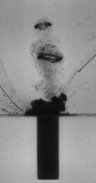

Moving contact line phenomenon is investigated through experimental
observations. Experiments were conducted using custom built setup. The
flow configurations emerged near the contact line were captured using
high-speed camera and analyzed using PIV technique.

Cavitation bubble dynamics
The cavitation phenomenon is investigated through a combination of
experimental, simulation, and theoretical approaches. Experiments are
conducted using the spark discharge method and are recorded with
high-speed photography. For simulations, the open-source software
OpenFOAM is utilized.